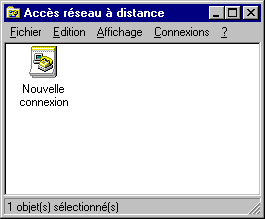
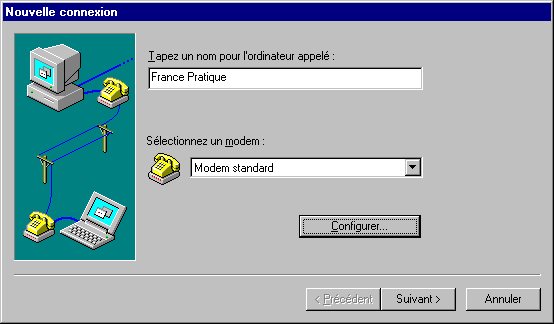
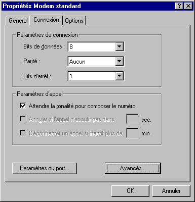
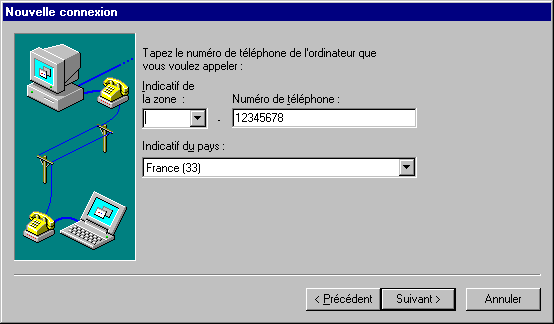
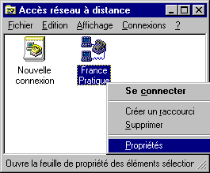
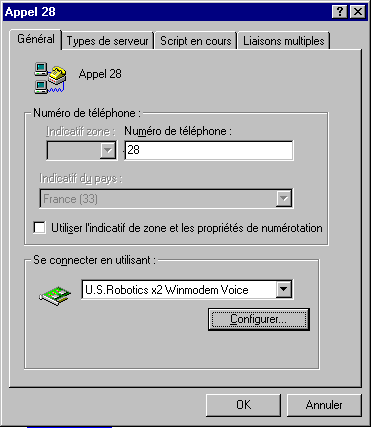
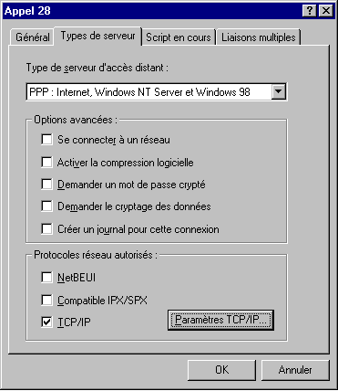

WINDOWS 95 et Internet
Configuration d'une connexion en dial-up IP
Document inspiré de
France-Pratique
5ème étape : Enregistrer un script de connexion
A partir du bureau de WINDOWS 95,
- Double-cliquez sur poste de travail.
- Double-cliquez sur l'icône "Accès réseau à distance".
ou
- Menu Démarrer->Programmes->Accessoires->Communications->Accès au Réseau

- Double-cliquez sur l'icône "Nouvelle connexion" afin de créer un nouveau script de connexion.
- Donnez un nom au script de connexion : par exemple France pratique.

- Choisissez le modem qui doit être utilisé pour la connexion. Cliquez sur configurer.
- Cliquez sur l'onglet "Connexion" et précisez les éléments suivants :
- bits de donnée : 8
- parité : aucune
- bit d'arrêt : 1
- Dans "Paramètres d'appel", cochez "attendre la tonalité pour composer le numéro".

- Cliquez sur "OK" et Cliquez sur le bouton "Suivant" en bas de la fenêtre pour poursuivre la définition du script de connexion.
- Indiquez alors le numéro d'appel à composer par le modem, c'est à dire le numéro du serveur-NT (32) ou du serveur Linux ().

- Cliquez sur le bouton "Suivant" puis sur le bouton "Terminer".
Dans la fenêtre "Accès réseau distant" une nouvelle icône signale maintenant l'existence du script de connexion "France Pratique" :
- Cliquez sur cette icône avec le bouton droit de la souris : un menu contextuel apparaît.

- Choisissez l'option "Propriétés".

- Cliquez sur "Type de serveur".
- Dans la liste déroulante, la ligne "PPP : WINDOWS 95, Windows NT 3.5, Internet doit être sélectionnée.
La seule option qui doit être sélectionnée dans cette fenêtre est "TCP/IP": le cas échéant, désélectionnez toute autre option.

- Cliquez sur "OK" puis fermez la fenêtre en cliquant sur l'autre bouton "OK".
Vous êtes maintenant prêt pour tenter votre première connexion à Internet.
© FRANCE PRATIQUE
Sommaire
Etape 4
Etape 6